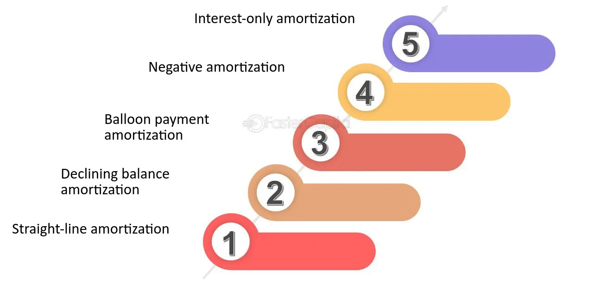

TYPES OF AMORTIZATION

The types of amortization are:
- Interest-Only Amortization: In this type, borrowers make payments only on the interest for a set period. The principal balance remains unchanged during this time. After the interest-only period ends, the borrower typically begins making larger payments that include both principal and interest, or they may need to pay off the full principal with a balloon payment.
- Negative Amortization: The borrower’s payments are less than the interest due, causing the unpaid interest to be added to the principal balance. As a result, the loan balance increases over time, which can lead to higher costs if not managed carefully.
- Balloon Payment Amortization: The borrower makes smaller, regular payments that cover only part of the principal and interest. At the end of the loan term, a large lump-sum payment (balloon payment) is due to cover the remaining balance.
- Declining Balance Amortization: With this type, the interest is calculated on the outstanding loan balance. As the principal decreases with each payment, the interest portion of future payments also declines. This results in the borrower paying less interest over time.
- Straight-Line Amortization: The borrower pays a fixed amount toward the principal with each payment, while the interest amount decreases over time. This results in higher initial payments, but the total loan cost is lower over time compared to other types of amortization.